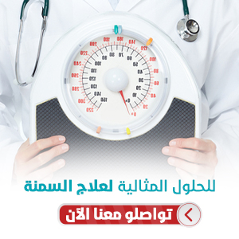
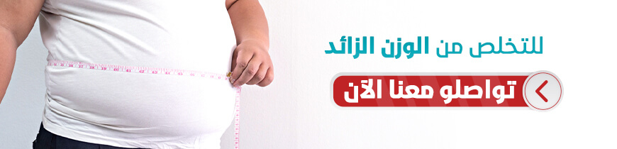
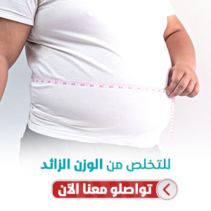

عملية بوتكس المعدة في تركيا
برزت عملية بوتوكس المعدة كواحدة من العمليات التي تمثّل حلّاً لمشكلة السمنة، وهي عملية يتمّ فيها حقن جدار المعدة من الداخل بمادة البوتوكس
دعنا نتصل بك

جراحة الكتف
يمتاز مفصل الكتف بأنّه أكثر مفاصل الجسم حريّةً، وأوسعها مجالاً في الحركة، ولكن تلك الحريّة تجعله أكث...
أورام العظام
تعتبر أورام العظام من الأمراض المعقّدة لأنّها تشمل في بعض حالاتها الأعصاب والعضلات والشرايين وتؤثّر ...
طب العظام للأطفال
نستعرض معكم فيما يلي معلومات تفصيليّة حول الحالات التي نعالجها في أقسام طب وجراحة العظام للأطفال مثل...
حشو الأسنان في تركيا
حشو الأسنان ومعالجة العصب، تقنيات في طب الأسنان تستعمل لعلاج التسوس وترميم الأسنان المتكسرة، يستخدمه...
برزت عملية بوتوكس المعدة كواحدة من العمليّات التي تمثّل حلّاً لمشكلة السمنة.
وهي عملية يتمّ فيها حقن جدار المعدة من الداخل بمادة البوتوكس، وهي المادّة المعروفة باستخدامها لشدِّ تجعُّدات الوجه، حيث تقوم تلك المادّة بإرخاء عضلات الوجه.
جدول المحتويات
ماهو حقن المعدة؟
كما يحدث في الوجه يحدث الشيء ذاته في العضلات الملساء في جدار المعدة، حيث تسبّب هذه المادة ارتخاءً في المعدة الأمر الذي يسرِّع الشعور بالشبع ويطيل فترته، ويكون سبباً في تقليل كميَّة الطعام ل، ويساعد في إنقاص الوزن على المدى البعيد.
يتمّ إجراء عملية بوتوكس المعدة بالمنظار الطبي عن طريق الفم، ومن دون تخدير عامٍّ، فلا يحتوي هذا الإجراء على عمل جراحيّ كما في غيره من إجراءات علاج السمنة وهو ما يجعل إجراء الحقن هذا إجراءً آمناً تماماً.
مميزات حقن بوتكس المعدة
- ينصح بإجراء بوتوكس المعدة للمرضى الذين تتراوح كتلة جسمهم بين 28 و40. أي أن بوتوكس المعدة مناسب للأشخاص الذين يعانون من زيادة الوزن والسمنة الخفيفة.
- إنها عملية غير جراحية، فلا توجد حاجة إلى ضمادات الجروح؛ لأن الإجراء لا يتضمن أي شقوق أو خيوط جراحية.
- العودة الفورية إلى أنشطة الحياة اليومية.
- عملية الشفاء أسرع وأكثر راحة مقارنة بإجراءات فقدان الوزن الأخرى.
الأعراض الجانبية لعملية حقن المعدة بالبوتكس
نظرًا لسهولة إجراء بوتكس المعدة وبساطته، لم ينتج عنه أعراض خطيرة حتى الآن؛ إذ إن المواد المستخدمة في الجراحة تغادر الجسم تمامًا في غضون أربعة أشهر إلى ستة، فلا وجود لخطر مسبب لمشكلة دائمة.
يعد برنامج النظام الغذائي المخصص والتكيفي أمرًا ضروريًا بعد العملية، لأن حركة عضلات المعدة محدودة، ولذا فإن تناول الأطعمة والمشروبات الثقيلة قد يتسبب في فشل الجراحة وزيادة الوزن.
إن بوتكس المعدة له آثار جانبية معينة، فينبغي على الشخص الذي يفكر في الحصول على البوتكس ألا يقوم بهذا الإجراء إذا كان لديه أي مرض عضلي أو حساسية من البوتكس، وعلى كلٍّ، إن الفحوصات توضح ما إذا كان الإجراء مناسباً.
مخاطر و اضرار حقن بوتكس المعدة
مقارنة بعمليات إنقاص الوزن الأخرى، يُعتبر هذا الإجراء آمناً بشكل عام، والمضاعفات التي قد تنتج عنه تعتبر بسيطة جداً بالنسبة للإجراءات الأخرى، حيث لا يخضع المريض للتخدير العام عند إجراء الحقن، ولا يحتاج المريض للمبيت في المشفى، ويستطيع استئناف حياته الطبيعية والعودة إلى عمله فوراً بعد العملية.
خطوات حقن المعدة بالبوتكس ومراحلها
يبدأ الطبيب أحيانًا بتخدير منطقة الحنجرة؛ ليتجنب المريض أي إحساس بالتقيؤ أثناء العملية.
لا حاجة للتخدير العام في هذه العملية، إذ يبقى المريض واعيًا لما يحيط به.
بعد إدخال المنظار إلى المعدة، يبدأ الطبيب بحقن البوتكس الموجود في إبرة الحقن المعلقة في نهاية المنظار، وذلك في مناطق مختلفة موجودة على جدران المعدة الداخلية، إذ تُدخَل الحقن في عضلات جدار المعدة بنسب محددة غير عشوائية، فيعمل البوتكس على تقليل حركة المعدة بنسبة 50٪ من وظائفها الطبيعية، الأمر الذي يجعل عملية إفراغ الأمعاء أقل بكثير.
وبعد حقن كل كمية البوتوكس المطلوبة في الأماكن المخصصة، يُخرِج الطبيب المنظارَ من خلال البلعوم؛ وبعد ذلك، يمكن للمريض مغادرة المستشفى في نفس اليوم، والعودة إلى أنشطته اليومية دون مشاكل أو قلق.

شروط عملية بوتكس المعدة؟
كما في الإجراءات الأخرى لعلاج البدانة، يكون الشخص مرشّحاً للققيام بهذه العملية في الحالات التالية:
- إن كان المريض يعاني من البدانة ولم تنفع معه وسائل إنقاص الوزن باستخدام الحِمية والتمارين الرياضية.
- إن كان المريض يعاني من إحدى مضاعفات ارتفاع الوزن، مثل: مرض السكري من النوع الثاني، وارتفاع ضغط الدم.
كم تستغرق عملية بوتكس المعدة
تستغرق العملية عشرين دقيقة في المتوسط.
كيف يتم بوتكس المعدة بالمنظار؟
تُعَدُّ عمليةُ بوتكس المعدة بسيطةً وغيرَ جراحية، إذ يُدخَل المنظار إلى المعدة عن طريق الفم بمساعدة الكاميرا والأجهزة الحديثة، وتُحقَن عضلات المعدة بمادة البوتكس، الأمر الذي يسبب إبطاء حركة العضلات، وإننا في علاجك الطبية نحرص على أن نوصل المعلومة إلى زوارنا وعملائنا بأبسط الطرق، ولذا أنتجنا الفيديو أدناه؛ لنشرح بشكل مبسط كيف يتم بوتكس المعدة بالمنظار:
ما بعد عملية بوتكس المعدة
قد ينتج عن عملية بوتكس المعدة الغثيان والقيء في الأيام القليلة الأولى بعد الإجراء، ويتم تخفيف هذه التبعات والتحكم فيها عن طريق مسكنات الألم.
وبعد فترة وجيزة يبدأ الجسم بالتأقلم، وتبدأ الآثار الجانبية بالانحسار، ويبدأ مفعول الإجراء بالظهور، من حيث تقليل كمية الطعام المتناول، والشعور بالشبع لفترة أطول.
نحرص في علاجك الطبية على المتابعة الحثيثة قبل أي إجراء وبعده.
نظام الأكل بعد عملية بوتكس المعدة
إن النظام الغذائي بعد بوتوكس المعدة، له القواعد العامة، مثل أي نظام غذائي صحي، وفي هذا النظام الغذائي، ننصح بتناول الأطعمة الغنية بالبروتين والأغذية الغنية بالألياف والأطعمة منخفضة الكربوهيدرات.
وعموماً، فإننا ننصح المرضى بالإقلاع عن جميع أنواع السكر المكرر، مثل السكريات البسيطة، والحَلْوَيات، والشوكولاتة.
قد يبدو القيام بهذا صعباً بالنسبة للعديد من المرضى، ولكن بعد تأثير البوتوكس - وهو انخفاض الشهية والشبع لفترات طويلة - يصبح هذا هدفًا يمكن تحقيقه.
الفيتامينات بعد عملية بوتكس المعدة
تُحدِث علاجات السمنة تغييرات طفيفة في الطريقة التي يمتص بها جسمك بعض العناصر الغذائية، إضافة إلى أن كمية الطعام المتناول قد تقلصت بشكل كبير، لذا فإن تناول الفيتامينات والمكملات الغذائية قد يكون أمراً ضرورياً، لذا ننصح في علاجك الطبية بالترتيب، ومراجعة الطبيب، ليجري بعض الاختبارات الروتينية للفيتامينات والمكملات الغذائية والمعادن؛ لتحديد الجرعات المناسبة.
نسبة نجاح عملية بوتكس المعدة في تركيا
تصل نسبة النجاح بعد عام واحد إلى 70 بالمائة، بينما يصل معدل فقد الوزن إلى 17 بالمائة من الوزن الزائد.


عملية بوتكس المعدة لمرضى السكر
تُعَدُّ علاجاتُ السمنة - ومن ضمنها عملية بوتكس المعدة - علاجاتٍ فعالةً لمرضى السكري؛ لما يمنتج عنها من استقرار في مستوى السكر والأنسولين في الدم مقارنة مع مرضى السمنة المفرطة.
تكلفة عملية بوتكس المعدة في تركيا
تتراوح تكلفة عملية بوتكس المعدة في تركيا قرابة الـ1200 دولار أمريكي، وقد تختلف باختلاف الحالة الصحية واختلاف البرنامج المرافق للعملية.
نتائج عملية بوتكس المعدة في تركيا
في دراسات تمّ فيها متابعة المرضى الذين قاموا بإجراء حقن المعدة بالبوتوكس، تمّ ملاحظة فقدان ما يقارب 10 كيلو غرامات من وزنهم خلال فترة 6 أشهر، وهي الفترة التي يكون فيها تأثير هذا العلاج في أفضل حالات فعاليّته بعد الحقن.
وبشكل عامّ فإن حقن البوتوكس يعتبر طريقة مثاليّة للمرضى الذين يهدفون إلى إنقاص 10 إلى 15 كيلوغراماً من وزنهم.
تستمرّ فعالية البوتوكس الذي تمّ حقنه لفترة 6 شهور فقط، وقد تستدعي الحاجة إعادة إجراء الحقن مرة أخرى. نتائج عمليات المعدة قبل وبعد في تركيا
 قبل
قبل
 بعد
بعد
 قبل
قبل
 بعد
بعد
 قبل
قبل
 بعد
بعد
 قبل
قبل
 بعد
بعد
هل لديك إستفسار : تواصل معنا - الإستشارة مجانية
علاجك الطبية .. لتكن الصحة تاجك.